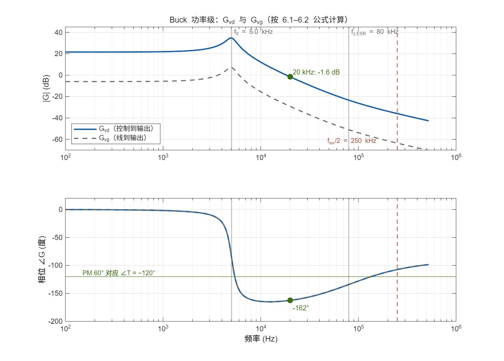
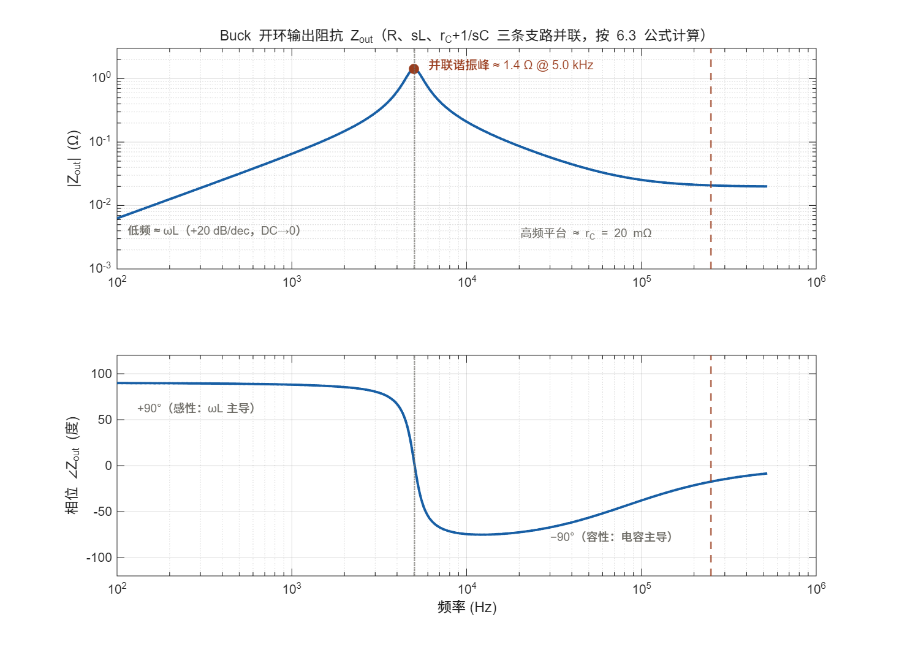
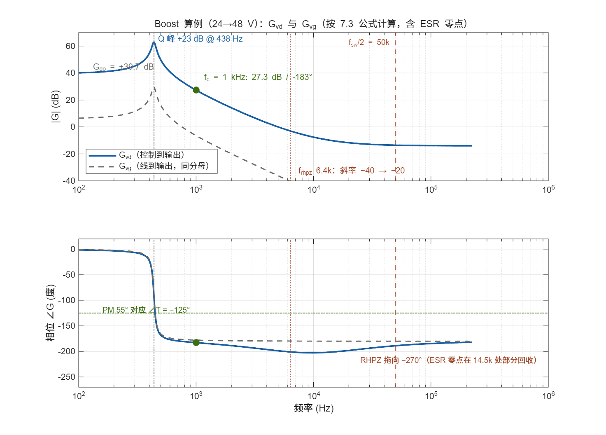

小信号建模：在电力电子里怎么用
状态空间平均法 · PWM switch —— 从一张开关电路图，到一套可以设计环路的传递函数
这一层解决的是"开关电路凭什么能用线性理论设计"这个根本问题。变换器里每一个非线性、时变的开关，都在拒绝拉普拉斯、拒绝 Bode、拒绝一切你熟悉的线性工具。小信号建模的全部工作，就是先把这个"拒绝"变成"接受"：先平均、再线性化，或者用 PWM switch 模型把开关直接换成一个线性子电路。
《电路与系统分析》1.4 节曾用五步推导把这条流水线走了一遍；这份文档是这条流水线本身的施工图：状态空间平均法的完整推导与失效边界、小信号线性化的严格操作、Vorperian 的 PWM switch 模型、传递函数族（Gvd / Gvg / Zout）、电流模式建模、DCM 专题，最后用一个 Boost 算例把所有东西走通并核算每一个数字。
00导读：这份文档怎么用
与《电路与系统分析》的分工
基础层文档把"四步套路"（分段线性 → 加权平均 → 线性化 → s 域求解）当作一条翻译流水线介绍了一遍，重点是让你知道有这条路；本文是这条路本身的施工图，重点是让你能独立走完并知道哪里会塌。具体分工：
| 问题 | 在哪份文档回答 | 本文对应章节 |
|---|---|---|
| 为什么要平均化？四步套路的骨架是什么 | 电路与系统分析 · 0.2 节 | 第 01 章（加深：模型族与边界） |
| Buck 的 SSA 五步推导 | 电路与系统分析 · 1.4 节 | 第 02、03、04 章（同样五步，但给出一般公式与失效条件） |
| PWM switch 模型是什么、怎么用 | 本文独有 | 第 05 章 |
| Gvg、Zout 怎么推、怎么用 | 电路与系统分析只给了定义 | 第 06 章（完整推导） |
| Boost 的 RHP 零点从哪来 | 电路与系统分析 · 2.5 节（结论） | 第 07 章（从状态方程一步步推出） |
| 电流模式怎么建模、斜率补偿怎么算 | 本文独有 | 第 08 章 |
| 补偿器设计与环路验证 | 电路与系统分析 · 第 3、5 章 | 不在本文范围（建模的下游） |
全文主线总览
下面这张图是全文骨架。中间一列是四步操作（每步括注对应章节），右侧是这一步的产物；左侧绿色虚线框是 PWM switch 这条捷径——它把①②③三步打包成一个查表即用的子电路，直接跳到④的门口。这正是它受工程界欢迎的原因。
三种读法
01为什么开关变换器需要专门建模
1.1 两道障碍：时变与非线性
把一台 Buck 的功率级单独拿出来，它拒绝一切经典线性工具的理由有两条，而且相互独立：
- 非线性：开关只有两个状态，电压-电流关系不是过原点的直线。叠加定理、戴维南等效、传递函数的"输入-输出比例"概念在这里全部失效。
- 时变：拓扑本身随时间切换。t 时刻你写下的电路方程，到 DT 时刻作废——系统是周期时变的，连"极点"这个概念都没有严格定义。
对付这两条障碍的策略也对应分两步：用"分区间"暂时消灭非线性（第 02 章），用"平均"消灭时变（第 03 章），用"小信号线性化"对付平均之后残留的乘积项（第 04 章）。顺序不能换：先有线性时不变，才有资格谈传递函数。
常见的概念偷换："电感电容是线性元件，所以开关电路是线性的"。元件是线性的，拓扑不是。每个区间内方程是线性的，但区间之间方程不连续——整体仍是时变非线性系统。平均化不是数学技巧，它改变的是你研究的对象：从"瞬时波形"换成"低频包络"。
1.2 模型族：同一张电路的四种用法
工程上至少并存四种模型，各管各的事。混淆它们是"模型不准"争论的真正来源——不是模型错了，是用错了场合。
| 模型 | 数学形态 | 用来回答什么 | 典型工具 |
|---|---|---|---|
| 开关级（大信号）模型 | 逐区间分段线性方程 + 理想/实际开关 | 纹波、损耗、di/dt、dv/dt、EMI | LTspice、PLECS、PSIM（瞬态） |
| 平均模型（大信号） | 连续时变的非线性状态方程，含 d·x 乘积 | 启动、限流、大信号暂态，快于开关仿真 | SIMPLIS 平均模型、Matlab ODE |
| 直流模型（DC） | 平均模型令导数为 0 | 变比、元件电压电流应力、参数选取 | 手算（本文 3.3 节） |
| 小信号模型（AC） | 线性时不变：状态方程或等效电路 | 环路设计、带宽、音频隔离、输出阻抗 | 手推 + Python/Matlab Bode，仿真交叉验证 |
一句话分清四种模型：直流模型回答"稳下来是多少"，小信号模型回答"扰动怎么传播"，平均模型回答"从启动爬到稳态的全过程"，开关模型回答"每一个开关瞬间发生了什么"。本文的主战场是第四项（小信号模型），但它只能从第二、三项的推导过程里长出来——直接背传函公式的人，换个拓扑就不会了。
四个模型怎么互相转换：一条流水线、三个加工动作
四种模型不是四件并列的工具，而是同一条流水线上依次加工的四站——站与站之间各做一次明确的操作。把它画出来，"现在手里是什么模型、做一步什么、会得到哪个"就不再靠感觉：
注意第三个箭头是"双输入"：线性化的系数（Â、B̂₂）取自平均模型，而展开的落点（D、X）取自直流模型——这就是 3.3 节的表格必须先于 4.2 节的扰动展开出现的顺序原因。落到工程操作上：先求一次直流解（手算或仿真稳态），再围绕它线性化，两步缺一不可。
1.3 低频假设与有效边界
平均化不是免费的。它用"只看低频"换掉了非线性时变，所以平均模型有明确的有效期：
物理图像：平均的本质是用一个周期内的平均值代替瞬时值。只有当状态变量（电感电流、电容电压）在一个开关周期内几乎不变时，这个代替才成立——而状态变量变化的快慢正是由 f0 决定的。《电路与系统分析》第 6 章的算例里 fsw/f0 = 41 倍，非常宽裕。
为什么偏偏是 f0、fc、fsw/2 这三个频率在卡边界
判据里的三个频率各有各的物理来源，值得逐个说透：
- 为什么要求 fsw ≫ f0（状态方程这头）：状态变量变化的快慢由 LC 决定——若开关周期与 LC 时间常数同量级，电感电流、电容电压在一个周期内已变化可观的比例，此时"一个周期用一个均值代替"就丢失了周期内的重要信息：平均方程 ⟨ẋ⟩ = f(⟨x⟩) 不再近似成立，因为非线性关系 f 在周期内已经"转过弯"了。fsw 比 f0 高得越多，周期内状态越接近冻结、平均误差越小——误差随 fsw/f0 快速收敛，但收敛速度随拓扑与调制方式而异，没有一条可以背的统一解析误差律。"10 倍以上"是工程经验值：到这个量级，平均误差已远小于 ESR、DCR、寄生等其它建模不确定度，不再是主要矛盾。
- 为什么还要求 fsw ≫ fc（输入这头）：平均化时隐含"区间内 d、vg 视为常数"。环路的补偿器输出正是 d——如果环路带宽逼近开关频率，意味着 d 每个周期都在大幅移动，"常数"假设破产，平均模型描述的就不再是真实发生的电路。所以环路带宽是被平均化合法性反向约束的：先有 fsw ≫ fc，平均模型才描述得了这个环路。
- fsw/2 为什么被反复强调（频域这头）：先澄清一点——fsw/2 不是平均模型"突然失效"的物理开关。平均模型的误差随 f/fsw 单调增大，本来就不该用到接近开关频率的地方，不存在"fsw/2 之前全对、之后全错"的硬截止。fsw/2 真正特殊，是因为凡是"每个开关周期采样一次"的环节——峰值电流模式、数字控制——它就是奈奎斯特频率：边带混叠、次谐波、采样极点对都锚定在这里（8.5 节）。工程上把 fsw/2 当作平均模型的可信边界执行，但心里要分得清这条线的两层机理：连续时间侧的误差累积，与采样侧的频率折叠。
一句话总结三个条件：f0 管"状态变量在周期内冻得住"，fc 管"输入在周期内冻得住"，fsw/2 管"采样环节的混叠线、也是平均误差累积到不可信的终点"。三个条件说的是同一件事的三面：平均模型只描述"比开关慢得多的世界"——慢得多，才轮得到均值代表瞬时。
| 边界 | 失效表现与对策 |
|---|---|
| 频率 ≥ fsw/2 | 平均误差累积到不可信，且模型不含开关信息。此频段行为要靠采样数据模型（第 08.5 节）或开关仿真。工程上一律不在 fsw/2 以上用平均模型做设计——环路带宽的天然上限。 |
| fsw ≈ 几倍 f0 | 高频假设失效但开关仿真还能用：例如集成磁、高功率密度 LLC 附近的寄生谐振。改用开关描述函数或直接仿真。 |
| 占空比每周期变化剧烈（快速限流、跳周期） | d 本身不再是"慢变量"，平均化假设（d 在周期内近似常数）破产。这属于数字控制中的非线性问题。 |
| DCM 且电感电流纹波 ≫ 直流分量 | CCM 平均模型不适用，需要 DCM 专用模型（第 09 章）。 |
1.4 建模产出哪四样东西
把整条流水线的"交货清单"先放在这里，后面每一章都在生产其中一项。拿到这四样东西，建模工作就算完成，下游的补偿设计（《电路与系统分析》第 3、5 章）才能开工：
| 产物 | 回答什么问题 | 在哪一章产出 | 下游给谁用 |
|---|---|---|---|
| 直流模型（变比 M 与元件应力） | 稳态电压电流是多少、器件承受什么 | 03 章 · 3.3 节 | 功率器件与磁件选型 |
| Gvd(s) 控制到输出 | 占空比扰动如何传到输出 | 05–07 章 | 环路补偿的主对象 |
| Gvg(s) 线到输出 | 输入电压波动有多少漏到输出（音频隔离度） | 06 章 · 6.2 节 | 前级纹波规格、滤波设计 |
| Zout(s) 输出阻抗 | 负载扰动引起多大电压跌落 | 06 章 · 6.3 节 | 负载阶跃、多相并联、Middlebrook 交互 |
注意这四个产物都是"工作点条件量"：换一个输入电压或负载，静态工作点变了，模型参数（D、ω0、Q、ωrhpz）就跟着变。一套模型只对一小片工况有效，扫工况 = 扫模型，这是建模与环路设计之间最容易被忽略的契约。
02分段线性分析：逐区间写方程
流水线的第一个工位。目标：把开关电路变成"每个区间一套线性状态方程"。这一步用的全是 KVL / KCL，没有任何新知识，但有三个容易做错的操作细节。
2.1 状态变量的选取
- 独立状态变量 = 独立储能元件的个数。电感电流、电容电压是默认候选，但要检查两种退化情况：多个电容与电压源构成回路（电荷被约束，独立变量少一个）、多个电感与电流源构成割集（同理）。
- 先画拓扑再定变量。写每个区间方程前，把该区间导通器件短接、截止器件断开，画出去掉开关后的纯线性电路。多数"推不下去"卡在这一步：不画图直接凭印象写方程。
- 选"物理直观"的变量组：电感电流与电容电压天然对应能量，平均后的方程系数直接给出小信号模型的 A、B 矩阵。用回路电流/节点电压混合选变量会让后面的矩阵变得难读。
为什么用状态空间而不是网孔方程：开关变换器的状态变量在区间之间是连续的（电感电流、电容电压不能突变——这正是 SSA 成立的前提，也是 3.5 节失效判据的来源）。用状态变量列写一阶方程组，平均时只需对各矩阵按占空比加权；网孔法的高阶方程做不到这种逐区间拼装。
2.2 Buck：两个区间分开写
以 CCM Buck 为例（理想开关与二极管、理想输出电容——ESR rC 的影响留到 6.1 一并加入，先把状态方程骨架立干净；带 ESR 后 vo ≠ vC，方程要多绕一层）。电感 L、负载 R。取状态 x = [iL, vC]T，输入 vg，控制 d。
两个区间的电容方程一模一样——这是 Buck 结构简单的好处。对 Boost 和 Buck-Boost，两个区间的电容方程也不同（二极管换到输出侧给电容充电），写的时候要格外小心。
2.3 区间矩阵形式
把每个区间的方程整理成标准状态空间形式：
Buck 的特点再次显形：矩阵 A 两个区间相同，只有激励 B 在切换。因此 Buck 的开关行为对状态方程的影响完全集中在"输入电压什么时候接到电感上"，这也是它平均模型最简、传函分子只有一个 ESR 零点的原因。
这两个区间指数解本身就是一种模型：把它们用周期性边界条件 x(T) = x(0) 拼接，得到含全部开关纹波的精确周期稳态解——这就是采样数据模型的雏形，也是仿真器求解直流工作点的方法。状态空间平均（下一章）丢掉的就是区间内信息，只保留周期平均。算纹波、算损耗的活留在区间解里，算环路的活才交给平均模型，别拿错工具。
03状态空间平均法：把开关抹平
状态空间平均法（State-Space Averaging，SSA）由 Middlebrook 和 Ćuk 在 1976 年提出，是电力电子能作为线性系统工程存在的根基。一句话：用"占空比加权的状态方程平均"替代"逐区间开关切换"。
3.1 加权平均：推导与波形理解
对一个开关周期内的导数取平均，并按两个区间各自所占时间比例（d 和 d′ = 1 − d）拆开积分：
这里隐含两步近似：① 区间内矩阵视为常数（即区间内 vg、d 不变）；② 状态变量用平均值代替瞬时值——成立条件是 1.3 节的低频假设。标量形式对 Buck 写出中间结果：
3.2 一般公式
把区间矩阵按占空比加权合并，SSA 的标准产物是一个连续时不变、但含 d·x 乘积的大信号平均模型：
两点务必看清：
- 开关没了，非线性还在。d 乘在状态变量上，这是双线性项。所以平均模型是"连续但非线性"，能做大信号仿真与直流求解，不能直接画 Bode——那是第 04 章的事。
- 矩阵加权不是电路定理，它平均的是状态方程而不是波形。用之前必须确认两个区间共享同一组状态变量（3.5 节）。
3.3 直流模型：变比自然长出
令平均方程导数为零，得到直流模型——所有稳态设计参数都从这里出来，而不是从"伏秒平衡口诀"里背出来：
伏秒平衡与电荷平衡是这个矩阵方程在"电感 / 电容"两条行上的投影：⟨vL⟩ = 0、⟨iC⟩ = 0。这张表之所以放在这里：它是"令导数为零"这把锤子敲三个拓扑的直接输出，也是全文第一份可交付产物（对照 1.4 节清单第一行）——后面所有章节的模型，都以这张表的静态值为工作点。三个基本拓扑的结果一次列全（理想元件、CCM）：
| 拓扑 | 变比 M = Vo/Vg | 电感电流 | 开关电压应力 | 开关 / 二极管平均电流 |
|---|---|---|---|---|
| Buck | D | Io | Vg | 开关 D·IL · 二极管 D′·IL |
| Boost | 1 / D′ | Io / D′ | Vo | 开关 D·IL · 二极管 Io |
| Buck-Boost | D / D′ | Io / D′ | Vg + Vo | 开关 D·IL · 二极管 Io |
表上每个值是怎么来的：两条平衡 + 两态钳位
整张表只需要三条工具：电感伏秒平衡（⟨vL⟩=0）、电容电荷平衡（⟨iC⟩=0）、以及"开关关断时两端被钳在哪个电位"。逐列过一遍：
Buck 的电感直接串联在输出上，⟨iL⟩ = Io；Boost 与 Buck-Boost 的电感只在续流段（d′）经由二极管向输出供电，故 D′·IL = Io → IL = Io/D′。用功率平衡验算 Boost：Vg·IL = Vo·Io → IL = (Vo/Vg)·Io = Io/D′ ✓ 两条路同一个答案。
Buck 的开关节点关断时被二极管钳到 0，开关上端接 Vg → 应力 Vg；Boost 的开关节点导通时为 0、关断时被二极管钳到 Vo → 应力 Vo；Buck-Boost 关断时开关节点被钳到 −Vo，开关两端 = Vg + Vo。开关平均电流同理：开关只在导通段流过电感电流 → ⟨isw⟩ = D·IL；续流段电流全部走二极管 → Buck 二极管平均 D′·IL = Io，Boost / Buck-Boost 二极管平均直接就是 Io（输出电流唯一通路）。
为什么这张表值得推一遍再背：元件应力列直接决定 MOSFET 耐压 / 电流规格与二极管选型；变比列决定控制环的静态增益范围。上面六行推导说明——这张表是"两条平衡 + 两态钳位"三句话的机械输出，不是记忆题。遇到多绕组反激、带变压器的任何拓扑，把绕组电压按匝比折算后重复同样三句话，就能现场推出来，不需要找口诀。
3.4 电路视角：弧平均
SSA 平均的是矩阵；还有一种完全等价的"电路级"做法——弧平均（switch-network / arc averaging）：把每条被开关"斩"的支路（图论中称为弧）直接换成它的周期平均电压或平均电流。
对 Buck：开关节点电压在 {vg, 0} 之间切换 → 换成受控电压源 d·vg；电源支路电流在 {iL, 0} 之间切换 → 换成受控电流源 d·iL。得到的纯线性（含受控源）电路与 SSA 方程逐项相同。
- SIMPLIS 的开关平均模型就是弧平均的自动化实现：工程师只画开关原理图，工具自动构造平均电路，瞬态仿真比开关级快一到两个数量级。
- 弧平均以支路为对象、不要求两组区间方程共享状态变量集合，适用面略宽于矩阵 SSA；两者对开关网络给出的端口特性完全一致——这正是下一章 PWM switch 的起点。
3.5 SSA 什么时候失效
SSA 的前提是"两个区间共用同一组状态变量，且它们连续"。以下四种情况破坏这个前提，硬推会得到错误方程：
| 失效情形 | 物理原因 | 工程对策 |
|---|---|---|
| 电容换接（容性回路 / 电容被开关并接短路） | 电荷在电容间瞬时再分配，电容电压跳变——"状态连续"破产 | 改用电荷平衡方程描述跳变；或保留回路寄生电阻让解连续；开关电容类电路需要专门的切换电容平均方法 |
| 电感斩波（电感电流被开关强制断开） | 电流被迫突变 → 高压尖峰由寄生电容承接，该电容成为新状态变量 | 把开关节点电容显式纳入模型（阶数升高）；反激 / 推挽里这是最常见陷阱 |
| fsw 接近回路谐振频率（谐振变换器） | 状态变量单个周期内变化剧烈，低频假设不成立 | 描述函数法（基波近似）、周期解拼接、或直接开关仿真 + FRA |
| DCM | 第三区间时长 d₂T 由电路内部决定，不再是独立输入 | 第 09 章：开关电感 / 开关网络的 DCM 模型 |
判断口诀：画出两个区间的等效电路后检查——是否存在"电容电压或电感电流在切换瞬间必须跳变"的约束？有，SSA 在这个拓扑上就不合法，先换方法再动笔。这类场合（LLC、开关电容、部分钳位拓扑）的环路问题，工程上普遍靠 FRA 实测 + 数字整定绕过，而不是继续推解析模型。
04小信号线性化：在工作点拉直
4.1 扰动与切线
平均模型里剩下最后一个非线性：乘积项（d·x、d′·vC……）。处理办法是经典的泰勒展开——在直流工作点上做一阶近似：
4.2 分离与丢弃：直流与小信号各归各位
以 Boost 的电感方程为例，把 d′·vC 这个乘积项彻底展开一次（d′ = D′ − d̂）：
展开后按"量级"分拣成三堆：
VC·d̂ 是全部戏眼：静态工作点电压与扰动占空比相乘，产生一个"正比于 d̂ 的电压源"。它的大小由工作点决定——同一台变换器在 12 V 和 48 V 输入下，这一项差 4 倍，环路增益就差 4 倍。小信号模型是工作点的切线，不是电路的一劳永逸属性。
4.3 小信号状态空间形式
对一般平均方程（3.2）做同样的分拣，得到线性时不变的小信号状态方程：
B̂₂ 是"控制输入如何进入状态方程"的通用公式：两个区间矩阵之差，乘上直流工作点。矩阵之差乘直流量、直流量乘矩阵之差——两个来源合一。用 Buck 验证：A₁ = A₂ ⇒ (A₁−A₂)X = 0，只剩 (B₁−B₂)Vg = [Vg/L ; 0]，与《电路与系统分析》1.4 节的结论完全一致。再用 Boost 验证：A₁ ≠ A₂（电感与电容方程在两个区间都不同），所以 B̂₂ 同时含 X 与 Vg 两堆项——第 07 章会逐项算给它看。
4.4 传递函数的一般配方
零初始条件下取拉普拉斯变换，解线性方程组：
三阶以上交给符号计算；CCM 基本拓扑都是二阶，有一条不用求逆的捷径：
Buck 验算：det = 1/(LC) ⇒ ω₀ = 1/√(LC) ✓；tr = −1/(RC) ⇒ Q = R√(C/L) ✓。这两条公式对所有二阶平均模型通用，第 07 章 Boost 算例马上再用一次。
4.5 "小信号"要多小
- 幅度判据：每个扰动的标幺值 ≪ 1（|d̂| ≪ D, D′；|v̂| ≪ V；|î| ≪ I）。若各扰动标幺幅值同为 ε 量级，被丢弃的二阶乘积项就是 O(ε²)——1% 的扰动对应 10⁻⁴ 量级残差，完全可忽略（量级论证即可，没有通用"一半"系数）。
- 频域判据：模型有效期 f < fsw/2（1.3 节），与幅度无关。
- 实测操作判据：注入幅度减半重测，Bode 曲线不变 = 还在线性区；变了 = 测到了大信号行为，降幅度重来。
两个"信号不小"的经典翻车场景：① 轻载下测环路，输出纹波与工作点同量级，小信号假设名存实亡；② 在带限流、跳周期、PFM 调制律的控制器上直接套 CCM 小信号模型——调制器本身是非线性的。先确认"比较器 + 斜坡"这类线性调制器在工作（电压模式的 Fm = 1/Vramp 就是这一确认，见《电路与系统分析》5.1 节）。
05PWM Switch 模型：开关即模块
5.1 为什么把开关模块化
SSA 是"整机建模"：换一个拓扑，从区间方程重推一遍。但回头看 02–04 章的工作量分布——整个电路里非线性、时变的只有开关网络（开关 + 续流二极管）那一小圈，外围的 L、C、R、变压器全是线性件。Vorperian 在 1990 年把这件事说破：既然开关网络的平均端口特性只是两条方程（3.4 节），为什么不把它做成一个三端子黑盒子电路，像查晶体管小信号模型那样查表使用？
- 不写状态方程也能建模：替换掉开关网络后，剩下一个纯线性 AC 电路，分压分流直接读传递函数。
- CCM 与 DCM 统一处理：模型形式不变，变的只是内部等效参数（第 09 章）。
- SPICE 原生兼容：模型全部由受控源构成，开关变换器可以做解析小信号的 AC 扫描，快且无收敛灾难。
- 参数即工作点：模型里的 V、I 就是直流解中的开关电压 / 电流应力，物理意义一眼看穿。
5.2 三端与两种接法
Vorperian 的原始定义（与 TI SLVA061 一致）：把"开关 + 反并联二极管"抠出来封成三端网络，三个端子都是真实的电气端口——a（active，有源端）、p（passive，无源端）、c（common，公共端）。内部结构固定为：开关在 a–c 之间，二极管在 p–c 之间——所以 c 永远是开关与二极管共享的那个节点，即开关节点 SW。要特别澄清一点：控制量 d(t) 是这个模型的输入变量（由栅极驱动电路决定），它不是第四个"取电端子"——不少二手资料把三端写成"功率端/开关端/控制端"，属于以讹传讹。
5.3 大信号端口特性
用 3.4 节的弧平均对两个基本拓扑分别求端口特性（c = 开关节点，是开关与二极管的公共端；电流沿 a–c 与 p–c 两条弧换流）：
这就是 PWM switch 的全部大信号模型——两条代数方程。它不对外围电路做任何假设：外接电感、接变压器、接第二级开关网络，端口特性一字不改。Vorperian 把它画成一个理想"斩波器"（chopper）：电压弧乘 d 或 d′、电流弧乘 d；直流稳态下斩波器退化为匝比 D : D′ 的直流变压器——Boost 的变比 1/D′ 就是从这个阻抗关系一步跳出来的。
5.4 线性化：小信号等效子电路
对端口特性做 4.2 节的"分拣"，得到小信号端口方程（以 Boost 型为例，静态值用大写字母）：
这两条线性方程各自对应现成的电路元件：一条含"冻结匝比"的传导支路（D·îL、D′·v̂o 项），加上 d̂ 控制的两个受控源——串联电压源 ea = V·d̂ 与并联电流源 jc = I·d̂，其中 V、I 取该弧"两态之差"与"导通电流"。这就是 Vorperian 小信号 PWM switch 的完整内容。Buck 与 Boost 的查表值：
| 量 | Buck 型（高侧） | Boost 型（低侧） |
|---|---|---|
| 电压弧受控源（串联） | Vg·d̂ + D·v̂g（注入换流回路） | −Vo·d̂ + D′·v̂o（串在电感-输出弧上） |
| 电流弧受控源（并联） | IL·d̂ + D·îL（输入侧分流） | IL·d̂ + D′·îL 分流给二极管侧 |
| 物理读法 | d̂ 调制"送进电感的电压" | d̂ 先"偷走二极管电流"（负号），再慢慢补回电感 |
一句话记忆：d̂ 在 PWM switch 里被翻译成两个源——电压弧上是一个大小 =（该弧两态电压差）× d̂ 的串联电压源，电流弧上是一个大小 =（该弧静态电流）× d̂ 的并联电流源。系数全是工作点量，所以扫工况 = 改受控源增益，不用重推模型。Boost 那行的"物理读法"已经预告了它的右半平面零点——第 07 章见。
5.5 给 Buck 直接画小信号电路
这一节做一次完整的实操演示：目标是不列任何矩阵，用画电路的方式把 Buck 的 Gvd 拿到手。过程分五步，每步只做一件事——如果你跟着 3～4 章推过矩阵版，这一节就是同一件事的"画图版"，两边逐项对得上。
第 1 步：从大信号端口特性出发（回顾 5.3）
Buck 的开关对（Q、D）平均之后只剩两条端口方程。第一条来自"开关节点电压"：Q 导通时 SW = vg、D 续流时 SW = 0，按占空比加权得到；第二条来自"输入支路电流"：输入电流只在导通段流动：
从此电路里不再有开关和二极管，只有这两条"平均化端口特性"。接下来对所有非线性（乘积）做线性化。
第 2 步：线性化电压方程（本节的核心动作）
把 d = D + d̂、vg = Vg + v̂g 代入第一条方程，按 4.2 节的分拣规则展开成四项：
这两个受控项就是整张小信号电路图里全部的"激励源"，来历各不相同：
| 项 | 来历 | 什么时候保留 |
|---|---|---|
| D·Vg | 静态占空比 × 静态输入 = 开关节点的直流电位 | 归直流模型（3.3 节），交流图上不出现 |
| Vg·d̂ | 静态输入电压 × 占空比扰动——控制量 d̂ 进入电路的唯一入口 | 求 Gvd（本节主角） |
| D·v̂g | 静态占空比 × 输入扰动——输入扰动的传播通路 | 求 Gvg（6.2 节） |
| d̂·v̂g | 小 × 小 | 永远丢弃（4.2 节） |
第 3 步：按"交流等效三规则"换元件
- 直流源置零：直流电压源对交流呈短路——Vg 从图上消失，它的"静态值"只以系数形式活在受控源 Vg·d̂ 里。
- 线性元件照旧：L、C、R 不是开关，不受平均化影响，直接换成 s 域阻抗（sL、1/sC、R）；电容带上 ESR rC。
- 受控源接入：把第 2 步的 v̂sw 画成串联在"电感支路最前端"的受控电压源——它驱动的就是原来开关节点的位置。
最容易困惑的一点：二极管去哪了？它在续流段"把 SW 钳到 0"的作用，已经在第 1 步被平均进 vsw = d·vg 这条方程里（"导通时是 vg、续流时是 0"正是二极管钳位的结果）。平均化把开关对的作用打包了，交流图上自然不再单独出现器件。小信号电路里没有二极管，不是漏画，是被平均掉了。
第 4 步：读图——剩下的全是分压
从受控源出发，输出节点 v̂o 恰好是 sL 与 Zp 的分压点（Zp = R ∥ (rC + 1/sC)，即电容支路与负载的并联）：
sL + Zp ⇒ Gvd(s) = v̂o/d̂ = Vg · Zp / ( sL + Zp )
同一张图、换一种激励，另两条传函就地产生：令 d̂ = 0、受控源换成 D·v̂g → 得 Gvg（6.2 节）；所有源置零、从输出节点注入测试电流 → 得 Zout（6.3 节）。三条传函分母相同，因为它们看的是同一个无源网络。完整化简成标准二阶形式的过程在第 06 章展开。
第 5 步：输入侧的受控电流源（本图为何省略）
5.3 的第二条端口方程 isw = d·iL 线性化后是 îsw = D·îL + IL·d̂，画出来应是接在输入回路的受控电流源（表示"开关从输入抽取的电流"）。求 Gvd、Gvg、Zout 时它不在输出分压路径上，所以本图省略；只有分析输入阻抗、输入电流纹波、或前级 EMI 滤波器交互（电流源正是《电路与系统分析》1.2 节"负电阻效应"的源头）时，才需要把它接回图里。
画完必做：静态自洽检验。交流图虽然置零了直流源，但下笔前应先用平均电路（大信号）核对一遍静态：vsw 平均 = D·Vg → Vo = D·Vg，与 3.3 节表格一致 ✓。这一步能当场抓住"受控源极性接反、位置放错"这类错误——极性反了，直流都对不上；直流对上了，交流图的拓扑才可信。
5.6 建模方法族对比
| 方法 | 产出物 | 对开关信息的处理 | 适用场景 |
|---|---|---|---|
| 状态空间平均 SSA | 平均 / 小信号状态方程与矩阵 | 完全抹平 | 教科书式推导；多状态、状态反馈设计；控制器综合 |
| 弧平均 / 开关网络平均 | 平均等效电路（大信号） | 完全抹平，但保留电路形态 | SIMPLIS 平均模型仿真；快速搭系统级模型 |
| PWM switch（Vorperian） | 三端电路模型（大 / 小信号各一套） | 完全抹平；CCM / DCM 统一 | 手画小信号电路读传函；SPICE AC；工程设计主力 |
| 描述函数 / FRA | 频率响应数据（非解析式） | 保留基波 | 谐振变换器、SSA 失效场合、实测频响辨识 |
| 采样数据模型（区间解拼接） | z 域 / 周期采样模型 | 完整保留（含边带、混叠） | 数字控制、fc 逼近 fsw/2、电流模式高频行为（8.5） |
五派殊途同归的部分：在 f ≪ fsw/2 的低频段，所有平均类方法给出的 Gvd 完全一致——它们平均的是同一个东西（伏秒与电荷）。分歧从 fsw/2 附近开始：只有采样数据模型还记得开关。所以选方法先问频率范围，再问工作量。
06传递函数族：Gvd、Gvg、Zout
本章把第 05 章画出的线性电路解干净，并以 Buck 为载体把三条传函一次推完。方法（分压 / 阻抗串并联）是大一电路知识，难的是记住每条传函"另一输入置零"的条件，以及读图时不被 Q 值骗到。
6.1 Gvd：控制到输出
对 5.5 节的等效电路，受控源 Vg·d̂ 经 sL 与 Zp = R ∥ (rC + 1/sC) 分压。代入整理（分子分母同除 R）：
读法：分子只有一个 ESR 零点，分母一对 LC 极点。Buck 的直流增益是 Vg 而不是 Vo——"占空比动 1%，电感左端电压动 1% 的 Vg"，与输出纹多少无关。这是 Buck 与 Boost / Buck-Boost 的第一处本质差别（后两者 Gdo 含变比放大，见 7.3）。
6.2 Gvg：线到输出（音频隔离度）
同一个电路，令 d̂ = 0、受控源换成 D·v̂g（5.4 节表格第一行的第二项），分压照旧：
两条重要结论：
- Buck 的开环线调整率与占空比同轨：直流处 |Gvg| = D = Vo/Vg。输入纹波原封不动按变比漏到输出——闭环之后才靠环路增益压下去（音频隔离度 ≈ 1/|T|，见《电路与系统分析》1.3）。
- 比例关系 Gvg = (D/Vg)·Gvd 是 Buck 特有。Boost 不成立——它的 Gvg 与 Gvd 分子结构不同（7.3 节对比）。把某个拓扑的传函族记成"通用公式"是高频误区（见第 10 章第 1 条）。
6.3 Zout：输出阻抗
令 d̂ = 0、v̂g = 0（受控源短路），从输出节点看进去。注意此时受控源短路意味着电感左端交流接地——输出节点到地共有三条并联支路：负载 R、电感 sL、电容支路 rC + 1/sC：
分子里的 sL 因子是关键：直流处电感就是一根导线，把输出短到（交流地意义上的）输入端——所以 Zout(0) = 0（精确说只剩 DCR），低频段 |Zout| ≈ ωL 以 +20 dB/dec 上升。到 ω0 附近，sL 与电容支路发生并联谐振（反谐振），阻抗出现峰值——理想时趋于无穷，实际被 R 与 rC 夹住（6.4 数值：≈ 1.4 Ω）。再往上电容接管，落到 ≈ rC 平台。物理图像：谐振附近恰是 LC 对"分流"最不积极的频段，负载注入的扰动电流最难被旁路——这与直觉一致：LC 谐振区正是功率级对负载扰动最敏感的地方。
三条实用推论：① 开环 |Zout| 低频趋零、谐振处起峰，闭环后 = 本式 ÷ (1+T)，低频被环路增益进一步压扁，残余峰出现在 |T| 变小的 fc 附近——负载瞬态跌落就由它定价；② 多相并联的均流互扰分析以 Zout 为界面；③ 它与输入侧的"负电阻"（《电路与系统分析》1.2）是同一台变换器在两个端口的两张脸。
6.4 三条传函的 Bode 读法
取一组贯穿本章的数值：Vg = 12 V、Vo = 6 V（D = 0.5）、L = 10 μH、C = 100 μF、rC = 20 mΩ、R = 2 Ω、fsw = 500 kHz。
| 特征量 | 计算 | 数值 |
|---|---|---|
| Gvd 直流增益 | 20 log Vg | 21.6 dB（12 V） |
| Gvg 直流增益 | 20 log D | −6 dB（0.5） |
| f0（双重极点） | 1/(2π√(LC)) = 1/(2π√(10μ × 100μ)) | 5.03 kHz |
| Q | √[LC(1+rC/R)]/(L/R + rCC) = 31.8μs/7μs（理想式 R√(C/L)=6.3 是上限） | 4.5（谐振峰 ≈ +13 dB——ESR 阻尼掉了近一半峰高） |
| fz,ESR | 1/(2π rCC) = 1/(2π × 20mΩ × 100μF) | 79.6 kHz |
| Zout 低频段 | 电感把输出短到交流地：|Z| ≈ ωL（100 Hz 处 6.3 mΩ） | DC → 0，+20 dB/dec 上升 |
| Zout 谐振峰 | f0 处 sL 与电容支路并联谐振，被 rC、R 夹住 | ≈ 1.4 Ω（MATLAB 计 1.43 Ω @ 5.0 kHz） |
| Zout 高频平台 | 电容接管后只剩 ESR：≈ rC | 20 mΩ |
| 平均化校验 | fsw/f0；模型有效期 | 99 ≫ 10 ✓；f < 250 kHz |


Bode 图的逐段读法：每一段在告诉你什么
拿到一张功率级 Bode 图，正确姿势不是"看个大概形状"，而是按转折频率把曲线切成段，逐段问"这段对环路设计意味着什么"。以上面两张真实计算曲线（Buck 数值）为例：
| 频段 | 幅频 / 相频形状 | 对设计的含义 |
|---|---|---|
| f ≪ f0 （直流 ~ 5 kHz） | |Gvd| ≈ 21.6 dB 平坦；相位 ≈ 0° | 植物是"纯增益"，环路增益在这段几乎由补偿器说了算。低频增益做多大，稳态精度和音频隔离度就是多大——这段的 T(f) 直接决定终值定理意义上的稳态误差。 |
| f ≈ f0（5.03 kHz） | Q 峰 +13 dB；相位从 −90° 坠向 −180°，Q 越高坠得越陡 | 整条曲线最危险的区段。穿越若落在峰上：增益被抬高 13 dB（fc 被迫右移）、相位正处悬崖（PM 崩盘）。补偿器零点通常就摆在这里抵消双极。 |
| f0 ~ fz （5k ~ 80 kHz） | −40 dB/dec；相位平台 ≈ −180° | 这是选穿越频率的主战场。−180° 平台意味着补偿器必须独自扛起全部相位预算：想要 PM 60°，∠T = −120°，补偿器需提供 +60° 绝对相位 → 只有 Type III 够（《电路与系统分析》3.2 节）。 |
| fz ~ fsw/2 （80k ~ 250 kHz） | ESR 零点把斜率拉回 −20 dB/dec；相位回收到 −90° 附近 | 形状"变友好"了，但不许把设计押在这段——ESR 随温度、频率、批次漂移，零点位置是借来的，不是自己的（读图三戒②）。 |
| f > fsw/2 | —— | 不再采信。误差本来就随 f/fsw 单调增大，到 fsw/2 附近已不可控；而且对"每周期采样一次"的环节（电流模式、数字控制），这里正是奈奎斯特频率——边带混叠、次谐波、采样极点对都锚定在此（8.5 节）。 |
现场读一个点（示范完整流程，对应图中绿色圆点）：取 f = 20 kHz。ω/ω0 = 3.97，分母 |1 − 15.8 + j0.88| ≈ 14.8（虚部 = ω/ω0/Q，用 ESR 阻尼后的 Q = 4.5），分子 ESR 项 |1 + j0.25| ≈ 1.03 → |Gvd| ≈ 12 × 1.03/14.8 ≈ 0.83（−1.6 dB）；相位 = −176.6°（双极）+ 14.1°（ESR 零点）= −162.5°，与 MATLAB 精确值一致。若把 fc 定在 20 kHz：需要 ∠T = −120°，补偿器绝对相位 = −120 − (−162.5) = +42.5° → Type II 上限约 −6° 到 −20°，做不到；Type III（上限 +70°）可以。这一个小数点的读法，就走完了"选 fc → 定补偿器类型"的完整决策。
三条传函有什么用：输出扰动账本的三栏
三条传函不是三个孤立的练习，而是同一本账的三栏——任何时刻输出电压的波动，都等于三个扰动各乘各的传函再叠加：
| 传函 | 对应产品规格里的哪一项 | 开环 → 闭环的关系 | 典型用法 |
|---|---|---|---|
| Gvd | 动态响应（带宽、阶跃恢复） | 它就是环路里的"被控对象"，闭环特征方程 1+T=0 由它参与构成 | 选 fc、算相位缺口、定 Type II/III——补偿器设计的全部输入（《电路与系统分析》第 5、6 章） |
| Gvg | 音频隔离度 / 线性瞬态 | 闭环漏过来 ≈ |Gvg|/|T|（低频段 T 大时近似 1/|T|·Gvg） | ① 前级是 PFC 时，算 100/120 Hz 输入纹波有多少漏到输出，反推环路低频增益要多高；② 评估电池电压斜坡、母线波动下的输出漂移；③ 判断需不需要前级滤波器 |
| Zout | 负载瞬态跌落 Δv、恢复时间 | 闭环 Zout,CL = Zout,OL/(1+T)——低频被环路增益压到毫欧级，峰值出现在 |T| 变小的 fc 附近 | ① 负载阶跃跌落估算：Δv ≈ Δi × |Zout,CL|peak，直接对规格书"50A/μs 阶跃跌落 < 5%"负责；② 多相并联的均流与互扰分析；③ 下游变换器的负电阻交互（Middlebrook 判据用的正是输入侧同款逻辑） |
- 一张图回答三类问题：审电路时，"环路稳不稳"查 Gvd，"输入脏不脏"查 Gvg，"负载跳不跳"查 Zout。只交 Gvd 的建模是不完整的——第 10 章误区 7 说的就是"四条传函当一条用"。
- 为什么它们共用分母：三条传函看的是同一个无源网络（L、C、rC、R），区别只在激励从哪个端口进。所以谐振频率、Q 值、稳定性边界对三者同时成立——一处谐振，三处发病：Gvd 的峰是环路的相位悬崖，Gvg 的峰是输入纹波的放大点（环路带宽压不住谐振时，工频纹波反而被 LC 谐振放大），Zout 的峰则是开环下负载扰动的最敏感频点（闭环后由环路增益压低，残余峰在 fc 附近）。
- 闭环视角的统一：环路设计的全部工作，本质是用 Gc·Fm·H 塑造 T(s)，让这本账的三栏同时达标——带宽（Gvd 栏）、隔离度（Gvg 栏）、瞬态（Zout 栏）。三者都随工作点变，所以都要在最恶劣工况复核（1.4 节的"工作点契约"）。
读图三戒：① 谐振峰附近的相位跌落比 −40 dB/dec 斜率暗示的更快，按 Q 修正（Q 越大越陡，高 Q 时几乎垂直）；② ESR 零点的位置不属于安全预算——它会随温度、频率、老化移动（《电路与系统分析》误区 3）；③ 截止频率 fsw/2 之外曲线一律不采信，那里属于采样数据模型的领地（8.5 节）。
07完整算例：24 V → 48 V Boost
本章是全文的"毕业考试"：规格 → 区间方程 → 平均 → 直流 → 小信号 → 传递函数 → Bode → 与仿真对拍，每一步都给出可复算的数字。选 Boost 而不再算一遍 Buck，是因为它同时演示两件事：占空比乘在状态变量上的乘积项线性化，以及右半平面零点的诞生。
7.1 规格与直流工作点
| 项目 | 取值 | 备注 |
|---|---|---|
| 输入 / 输出 | 24 V → 48 V / 2 A（96 W） | 汽车 12/24 V 系统升压常见点 |
| 开关频率 fsw | 100 kHz（T = 10 μs） | — |
| L / C / rC | 150 μH / 220 μF / 50 mΩ | R = Vo/Io = 24 Ω |
| 变比与占空比 | M = 2 ⇒ D′ = Vg/Vo = 0.5，D = 0.5 | 直流模型：Vo = Vg/D′ |
| 电感电流 | IL = Io/D′ = 4 A | 亦 = Vg/(R·D′²) ✓ 功率平衡 |
| 电流纹波 | ΔiL = VgD/(Lfsw) = 24×0.5/(150μ×100k) | 0.8 A（20%；CCM 判据看电感谷值：IL − ΔiL/2 = 4 − 0.4 = 3.6 A > 0 ✓） |
| 电压纹波 | 电容充放电分量 Δvo ≈ IoD/(C fsw) = 2×0.5/(220μ×100k) | ≈ 45 mV；还要叠加 ESR 跳变 (IL−Io)·rC = 2A×50mΩ ≈ 100 mV → 实际纹波以 ESR 尖峰为主（合计 ≈ 0.1 V，0.2%） |
7.2 分段 → 平均 → 线性化
分段（状态 [iL, vC]，先按理想电容，ESR 在 7.4 补上）：
平均（与 Buck 不同，Boost 两个矩阵都在切换）：
线性化：代入 d′ = D′ − d̂、各量 = 大写 + hat，按 4.2 分拣。直流项消掉给出 VC = Vg/D′、IL = Vg/(RD′²)（7.1 已核）；一阶项：
用 4.3 的 B̂₂ 通用公式验算 d̂ 项：(A₁−A₂)X = (VC/L, −IL/C)ᵀ——乘回各自行的 L、C 系数，正是两个一阶方程里的 +VC·d̂ 与 −IL·d̂；(B₁−B₂)Vg = 0（Boost 两区间的 B 矩阵相同）。逐项吻合 ✓。这就是 5.4 节 PWM switch "串联电压源 + 并联电流源"的状态方程版本。
7.3 解出 Gvd：RHP 零点的诞生
零初始条件取拉普拉斯，令 v̂g = 0。从第一式 îL = (VCd̂ − D′v̂C)/(sL)，代入第二式整理：
负号就是非最小相位：占空比瞬间增大 → 二极管导电时间 d′ 变短 → 注入输出电容的电流先跌 → 输出电压先向下走，之后才随电感能量上升恢复。"响应与指令方向相反起步"，时域上表现为反跳（undershoot），频域上表现为：幅频按零点正常抬升（+20 dB/dec），相频却持续滞后（−90°）。幅相符号相反，这就是 RHP 零点无法用极点抵消的根本原因——抵消它的极点在右半平面，本身就是不稳定的。
Buck-Boost 与反激（CCM）的结构与此完全同构：同样存在 RHP 零点，闭式系数随拓扑略有出入，但标度律一致——ωrhpz ∝ R(1−D)²/L（反激以励磁电感为 L、反射负载为 R，系数需按匝比折算）。要背的是标度律和"谁在什么方向推它"，系数到了现场按同一方法现推。在 CCM 下，Boost、Buck-Boost 与反激的控制到输出传函都存在这个零点（进入 DCM 后它会消失，见 9.3）；Buck 没有，因为它的电感每一拍都在直接给输出送货。
同样流程令 d̂ = 0 得 Gvg：分母与 Gvd 完全相同，分子为 D′（无零点）：
7.4 代入数值
| 特征量 | 计算 | 数值 |
|---|---|---|
| Gvd 直流增益 | Vg/D′² = 24/0.25 | 96（39.7 dB） |
| f0 | D′/(2π√(LC)) = 0.5/(2π√(150μ × 220μ)) | 438 Hz |
| Q 与谐振峰 | R·D′·√(C/L) = 24×0.5×1.211；峰 ≈ 20 log Q | 14.5；+23 dB —— 阻尼极小！ |
| frhpz = R D′²/(2πL) | 24 × 0.25/(2π × 150μ) | 6.37 kHz |
| fz,ESR = 1/(2π rCC) | 1/(2π × 50mΩ × 220μ) | 14.5 kHz（高于 frhpz，帮不了忙） |
| 带宽硬上限 fc ≤ frhpz/3 ~ /5 | 6.37k / 3 | ≈ 2.1 kHz，本例取 1 kHz（7.6） |
| 平均化校验 | fsw/f0 = 100k/438 | 228 ≫ 10 ✓ |
Q = 14.5 是本例最危险的数字：Boost 的 Q 正比于负载电阻，轻载（R↑）时谐振峰还要抬高，438 Hz 处的 +23 dB 尖峰直接决定低频段环路增益形状。补偿器在 f0 以下的增益必须按"峰高 Q 倍"而非"平坦"来配，否则低频 GM 不足，启动或大阶跃时撞进谐振点就振给你看。这也是"只在满载测环路"翻车的又一来源。

bode74.m）：这就是 Boost 的 Bode 签名——438 Hz 处 +23 dB 的 Q 峰近乎垂直地坠落；6.4 kHz 处 RHP 零点让幅频"刹车"（−40 → −20 dB/dec），相频却继续"漏水"（绿色圆点：fc = 1 kHz 处 27.3 dB / −183°，与 7.6 节核算一致）。幅频抬头 + 相频滞后这对矛盾组合，就是非最小相位的身份证。灰虚线是 Gvg：与 Gvd 共用分母（同一个谐振、同一个 Q），但分子干净、没有 RHPZ——7.3 节"同分母、不同分子"的结论在图上一眼可辨。红色虚线为模型有效期 fsw/2 = 50 kHz。7.5 与开关仿真和实测对拍
模型推导完不叫建模完成，交叉验证完成才叫。三步对拍，成本从低到高：
7.6 本例的设计结论
| 结论 | 数值依据 |
|---|---|
| 功率级不可直连：需要完整环路 | Gdo 39.7 dB、Q 14.5、RHPZ 卡位——无源网络自身无法既快又稳 |
| 穿越频率取 fc ≈ 1 kHz（frhpz/6） | fc = 2 kHz 时 ∠Gvd ≈ −189°，PM 需求超 Type III 上限；1 kHz 处 ∠Gvd ≈ −183°，补偿器提供 ≈ +58° 绝对相位即可达 55° PM → Type III（零点置于 f0 附近、极点贴 ESR 零点与 fsw） |
| 带宽天花板由 frhpz 而非 fsw 决定 | fsw/10 = 10 kHz 与 frhpz/3 = 2.1 kHz 取小者。想再提速可以减 L 吗？——ωrhpz = RD′²/L，减 L 确实把 frhpz 推高，方向没错；代价是电流纹波、峰值电流与开关/导通损耗全面上升，磁件体积也涨——带宽不是免费的。轻载（R 大）同样推高 frhpz，但 Q 峰同步恶化，两头都要看 |
| 轻载复算项 | R 升 → frhpz 升（变好）但 Q 升（变坏）、IL 降；以 20% 负载复算 f0 处增益裕度 |
把这个算例和《电路与系统分析》第 6 章的 Buck 算例放在一起看：同一条流水线，Buck 交出的是一张"温和"的 Bode（可打 30 kHz），Boost 交出的是一张"带刺"的 Bode（只能打 1 kHz）。建模层的产出质量直接封顶了环路层的设计空间——这正是建模值得单独成层的理由。补偿网络的元件参数化见下游文档。
08电流模式建模：另一条路
8.1 为什么要电流环
电压模式里占空比是唯一控制量；电流模式在内环直接控制电感电流峰值：误差放大器的输出变成电流指令 ic，与采样的 iL 斜坡比较产生关断时刻。对建模而言，它买到了四样东西：
- 双重极点消失：电流环把电感"驯化"成受控电流源，Gvd 从二阶降为一阶（8.4），Buck 用 Type II 即可 —— 补偿难度大减。
- 逐周期限流：电流指令封顶 = 硬件级过流保护，短路测试（SiC 耐受只有几微秒）因此可行。
- 显著改善输入滤波交互：电感在中低频被表现为受控电流源，与输入 LC 的谐振交互大幅减弱（Middlebrook 判据压力变小）。注意是"改善"不是"免疫"——恒功率的负增量输入阻抗本质并没有消失，只是在电流环带宽内被环路行为掩盖，带宽外依旧要按老规矩检查。
- 有利于多相均流：各相电流受同一指令约束，通常无需独立均流环路即可接受。但均流精度最终受限于电流采样失调、斜率补偿失配与传播延时——大电流多相设计里这些误差项仍要逐项核算。
代价也要入账：电流采样与调理（检相移、消偏置）、峰值对开关噪声敏感（需消隐 blanking）、占空比大于 0.5 时的次谐波问题（8.2）、以及模型本身多了采样效应——电压模式的平均模型在电流模式里不够用了。建模层的任务就是把这几笔账算清楚。
8.2 采样与次谐波振荡
峰值电流模式在每个周期采样一次电感电流。电流环的控制量不是瞬时电流，而是"上一拍开始、这一拍结束"的斜坡交点。设某拍电流峰值出现扰动 δ（采样时刻错位），下一个周期的推演（Buck：上升斜率 m1 = (vg−Vo)/L，下降 m2 = Vo/L）：
负号来自交点在下降沿；幅值比 = D/D′ = m₂/m₁（伏秒平衡的镜像）。于是 D > 0.5 时 |比| > 1：扰动逐拍放大，周期加倍锁死在 fsw/2——这就是次谐波振荡，示波器上一眼可认：开关节点波形"一大一小"交替。
8.3 斜率补偿的定量设计
| 取值 | 效果 |
|---|---|
| ma = m2/2（理论下限） | 全占空比范围刚好收敛：衰减比 = (m₂/2)/(m₁+m₂/2)，D = 0.5 时约 1/3，D→1 时趋于 1（一拍不衰减）——贴线设计，量产不建议 |
| ma = m2（工程常用上限附近） | 衰减比 = 0，一拍消灭扰动（deadbeat）；但斜坡由人工分量主导，等效电流环跨导被压缩、信噪比变差。多数设计取 ma = (0.5~1)·m₂ |
| ma ≫ m2（过大） | 斜坡被人工主导：等效跨导下降、动态响应变钝；最小导通时间变长，占空比上限受限 |
别忘了"环路增益账本"里的 Fm 换账：电流环闭环后，电压环看到的调制器不再是 1/Vramp，而是"电流指令 → 电感电流"≈ 1（低频）。《电路与系统分析》5.1 的 T(s) = Gc·Gvd·Fm·H 结构不变，但 Gvd 与 Fm 都要换成电流模式的版本——沿用电压模式的参数是实测对不上的经典原因。
8.4 简化模型：双重极点消失
设计惯例（fc ≪ fsw/5 时成立）：把电流内环视为"带宽 ≈ fsw/2 的 1:1 电流跟随器"。功率级从电压环看变成：受控电流源 îc 灌入输出电容网络：
两个提醒：Boost 与 Buck-Boost 电流化之后 RHP 零点仍在（能量"先断后供"的机制没变，位置近似仍在 ω ≈ R D′²/L 量级）——电流模式治极点、不治非最小相位，带宽上限没有解除；电流模式的线扰动抑制有窗口期：电流环带宽以上，输入电压变化经占空比直通输出（Gvg 高频抬升），PFC 前级的 100 Hz 纹波抑制要在低频段靠电流环增益解决。
8.5 简化模型的边界
"1:1 电流跟随器"是低频近似。电流环的采样本质使其精确模型在 fsw/2 处有一对等效双重极点，Q 随 D→0.5 急剧升高（无补偿时发散——与 8.2 的次谐波是同一件事的两种语言）。这就是 Ridley 对"教科书电流模式模型"的著名修正（含斜率补偿的完整连续时间模型，1991）。
| 症状 | 诊断 | 对策 |
|---|---|---|
| 实测相位比简化模型多跌 90°+ 于 fc 附近 | fc 逼近 fsw/5 ~ /3，采样极点登场 | fc 下压，或按 Ridley / 采样数据模型重设计 |
| D 在 0.45~0.55 扫过噪声谷 | fsw/2 处 Q 峰扫过环路中频带 | 保证斜率补偿按 8.3 取值；避开该占空比工作区 |
| 消隐时间（blanking）加上后高频段曲线漂移 | 消隐把采样时刻推迟 → 附加延时 | 把消隐时长计进环路延时预算；仿真时建模它 |
| CCM→DCM 边界处环路突变 | 电流环增益在 DCM 不再是 1:1 | 按边界工况分别建两套模型（第 09 章） |
本层的学习检查点：能向同事解释为什么"次谐波振荡、8.3 的 ma ≥ m₂/2、8.5 的 fsw/2 极点 Q 发散"是同一条物理事实的三个侧面——电流只在每个周期被采样一次，而扰动恰好在交替拍上被放大。解释通了，电流模式建模就毕业了。
09DCM 与模型边界
9.1 DCM 破坏了哪条假设
CCM 建模从头到尾默认了一件事：d 是自由输入，二极管导电时长就是它的补 d′T。DCM 下电感电流每拍归零，二极管在 d₂T 提前截止——而 d₂ 不是指令，是电路自己"算"出来的：以 Buck-Boost 为例，由零伏秒平衡（升：Vg·dT；降：Vo·d₂T）直接解出
于是平均化的账本变了：以 Buck 为例，输入侧平均电流等于三角波面积除以周期，
这就是 DCM 小信号与 CCM 分道扬镳的地方：开关网络把"电感 + 开关"联合折成一个非线性受控电阻。此外变比 M 也不再只由 D 决定，而是随负载滑动——"换负载不换模型"在 DCM 里不成立。
9.2 开关电感：Vorperian 的处理
Vorperian 的 Part II 给出 DCM 的统一处理：保留 PWM switch 三端结构，把电感连同其换流一起折叠成开关电感（switched inductor）——一个由 d 调制的等效电阻：
线性化后得到两个受控量，这正是 DCM 环路好做又难精调的根源：
| 后果 | 对建模 / 环路设计意味着什么 |
|---|---|
| 双重极点消失 | 电感被 Re 替代后，输出只剩电容 × 负载的一阶系统 + ESR 零点——Bode 大幅简化，环路往往 Type II 收工 |
| 直流增益含负载 | M 随 R 滑动：线调整率变差（输入电压变化部分被 d₂ 吸收）、设计表里的 D 变成"该负载下的 D" |
| 模型参数逐点算 | Re、g₂ 都含 d² 与工作点电流——扫工况不再是"复核"，而是"换模型" |
9.3 使用 DCM 模型的三条经验
- 先划模式边界再建模。定义 K = 2L/(R Ts)（归一化电感），CCM/DCM 边界：Buck 为 Kcrit = (1−D)；Boost 为 Kcrit = D(1−D)²；反相 Buck-Boost 为 Kcrit = (1−D)²。轻载侧几乎必然 DCM，环路要按两套模型分别校核，取最坏穿越。
- 边界附近最险：CCM→DCM 过渡时 Gvd 的增益与相位发生结构突变（阶次变化），工作在边界 ±20% 内的设计实测常出现"同一台机器、冷机与热机环路不同"——那是负载电流漂过了边界。
- 好消息：CCM 的 RHPZ 在 DCM 中消失。电感电流每拍从零升起、又归零，能量不再"隔拍传递"——Boost / 反激进入 DCM 后，那个 CCM 右半平面零点随之消失，这正是 DCM 反激敢把环路带宽做高的原因。但别高兴太早："控制只在每个周期生效一次"的脉冲传输本质仍在，相位在 fsw/2 附近照样恶化，且 DCM 增益随负载变化剧烈——带宽一般仍按 ≤ fsw/10 ~ /20 克制设计，并在边界工况复核。
工具层提示：SIMPLIS 的开关模型与 PLECS 的精确开关仿真天然支持 DCM，而 SIMPLIS 的"平均模型"仅 CCM 有效——跨模式的研究（如负载甩载穿越边界）必须回到开关级。这是模型族的边界，不是工具的缺陷。
10十个常见误区
- 把一个拓扑的传函当通用公式套。Gvg = (D/Vg)·Gvd 只在 Buck 成立；Gdo = Vg 也是。换拓扑回 05/07 章的方法重推，别改字母。
- 拿平均模型往 fsw/2 以上设计。平均模型不含有开关信息，那里的预测没有意义。分叉点（7.5 图）就是模型的"保质期"标签。
- CCM 模型硬套 DCM 工况。轻载 DCM 下 M 随负载漂移、模型阶次改变；用 9.3 的边界公式先分域，再分域建模。
- 电流模式把一阶简化模型推到 fc > fsw/5。采样极点与次谐波行为在 fsw/2 附近等着——简化模型在那里系统性乐观。
- 斜率补偿只问"加没加"，不问"多大、什么单位"。ma 必须与电感电流斜率同一折算体系（都折算到采样信号上）；从斜坡发生器规格书抄下来而没除 Ri 的补偿量是错的。
- 试图用极点抵消 RHP 零点。抵消零点所需极点位于右半平面，本身不稳定；RHPZ 只绕不让。幅频 +20 dB/dec、相频 −90° 的"矛盾组合"是它的身份证。
- 四条传函当一条用。Gvd、Gvg、Zout 各对应不同的"另一输入置零"条件，规格书里音频隔离度、负载阶跃、环路整定各取所需；混用等于同时让开关既动又不动。
- 拓扑里有容性环 / 电感斩波还硬推 SSA。状态变量被迫跳变的场合（3.5），推出来的方程在数学上就不属于这个电路。先改方法（电荷平衡、纳入寄生电容、PCAM 类修正），再谈结果。
- 只用一个工作点建一次模型就设计全范围环路。D 随线与载变化，ω0、Q、frhpz 全跟着动（Boost 轻载 Q 与峰最高）。扫工况 = 扫模型，环路按最恶劣工况整定。
- 实测与模型不符就断言"理论不准"。按三层排查：工作点（直流解 vs 实测静态值）→ 寄生（ESR/DCR/开关管压降未建模）→ 频率边界（是否在有效期外）。三层都对不上，才轮到怀疑推导。
11公式速查卡
平均化与线性化
PWM switch 与端口方程
传递函数（Buck / Boost）
电流模式与 DCM
12自测：检查你是否真的掌握了
答案折叠在题目下方，均按"结论 → 推导/算式 → 常见误答"展开。先自己想，再展开对照——能对着空白纸复述出推导过程，才算过。
1 · 为什么必须"先解直流、再做小信号"？展开式里的直流项去哪了？
结论：直流解不是"前置步骤"，而是小信号模型的一部分——一阶项的每一个系数都是工作点量。三层原因：
① 直流项是被"自动抵消"的，不是被删掉的。把 d = D+d̂、x = X+x̂ 代入平均方程后按量级分拣（4.2 节），零阶项恰好等于直流方程 0 = A(D)X + B(D)Vg。它等于零的前提是 X 确实是那个直流解——代入任何别的数都抵不掉，方程直接失衡。所以"先解直流"不是流程惯例，是抵消成立的条件。
② 一阶项的系数全部取自工作点：Boost 展开出的 VC·d̂、IL·d̂，其数值就是 3.3 节表格里的静态值。没有直流解，受控源增益无从填数。
③ "小"的判据本身以工作点为参照：|d̂| ≪ D、|v̂| ≪ V，参照物就是静态值——不知道工作点，连"扰动算不算小"都无法判定。
常见误答对照：跳过直流直接背 Gvd 公式，代入错误工作点（例如把 24 V 输入算的模型用在 48 V）——所有 V·d̂ 增益差一倍，环路实测增益与设计对不上，还找不到原因。这类错误的特征是"形状对、增益错"，正是工作点错的签名。
2 · 低频假设一句话说清，并给两条定量判据。
一句话：平均模型只描述"比开关慢得多的世界"——状态变量与输入量在一个开关周期内都几乎冻结，均值才能代表瞬时。
判据①：fsw ≥ 10·max(f0, fc)。f0 管"状态变量冻得住"——状态变量由 LC 决定变化快慢，fsw 远高于它时平均误差已远小于其它建模不确定度（"10 倍"是工程经验值，误差收敛速度随拓扑与调制方式而异，没有统一解析律）；fc 管"输入冻得住"——补偿器输出就是 d，环路带宽逼近开关频率时 d 每周期大步移动，"区间内 d 为常数"破产（1.3 节）。
判据②：设计一律止于 f < fsw/2。平均模型的误差随 f/fsw 单调增大，本就不该用到接近开关频率处；fsw/2 真正的硬意义在于"每周期采样一次"的环节（电流模式、数字控制）——那里它是奈奎斯特频率，边带混叠与次谐波都锚定在此，必须换采样数据模型（8.5 节）。
补充第三条（操作判据）：实测时把注入幅度减半重测，曲线不变才算在线性区（4.5 节）。三条分别管"状态、输入、激励"，缺一不可。
3 · 本算例 Boost（24→48 V，R = 24 Ω，L = 150 μH）的 frhpz 与带宽上限？
结论：frhpz ≈ 6.37 kHz，带宽上限由它（而不是 fsw/10）决定，本例取 1 kHz 配 Type III。完整推一遍：
① 占空比：D′ = Vg/Vo = 24/48 = 0.5，D = 0.5。
② 负载：R = Vo/Io = 48/2 = 24 Ω（题目没直接给 Io 时先由功率求）。
③ 右半平面零点：ωrhpz = R·D′²/L = 24 × 0.25 / 150μ = 40 krad/s → frhpz = 40k/2π ≈ 6.37 kHz。
④ 顺手核对另两个特征量（它们影响 fc 处的相位预算）：f0 = D′/(2π√(LC)) ≈ 438 Hz，Q = R·D′·√(C/L) ≈ 14.5——高 Q 意味着 fc 处功率级相位已深度跌落，相位余量要按最坏留。
⑤ 带宽上限：fc ≤ frhpz/3 ≈ 2.1 kHz。再算一步相位账：fc = 2 kHz 时 ∠Gvd ≈ −189°，目标 PM 55° 需要补偿器提供 > 64° 绝对相位，贴着 Type III 的上限；退到 fc = 1 kHz 时需求降到 ≈ +58°，才留出裕量。
常见误答对照：直接答 fsw/10 = 10 kHz——没有 RHPZ 意识。两条上限取小者，本题小者是 RHPZ 给的 2.1 kHz（再打折到 1 kHz）。
4 · 为什么 RHPZ 不能像 ESR 零点那样"用极点抵掉"？
结论：LHP 零点幅相同号、可以抵；RHP 零点幅相相反、抵消所需的极点自身不稳定。逐条看：
① 幅相符号对比。LHP 零点（s = −ωz，如 ESR 零点）：幅频 +20 dB/dec、相频 +90°（超前）——幅相同号，用一个极点对消后净效果中性，数学与电路都成立。RHP 零点（s = +ωz）：幅频 +20 dB/dec、相频 −90°（滞后）——幅频说"该抬"、相频说"在拖"，符号相反。
② 对消需要什么：抵掉 s = +ωz 需要一个极点 s = +ωz，它的时域冲激响应是 e+ωzt——发散。即使代数上把分子分母"约掉"，这个不稳定模态仍留在闭环特征方程里，系统照样发散。对消一个 RHP 零点 = 制造一个不稳定极点。
③ 物理本质：非最小相位 = 初始响应方向与指令相反（Boost 加大 d，二极管导电时间先缩短，输出先跌再升）。这种"先走反方向"是能量传递顺序决定的，任何稳定补偿器都消不掉，只能绕——工程规则 fc ≤ frhpz/3~5（第 07 章）。
常见误答对照：知道"幅相相反"但答不出"为什么不能抵"——缺的是第②条的极点位置论证。反过来，ESR 零点是 LHP、可以抵，但 ESR 随温度老化漂移，押它当相位来源同样危险（《电路与系统分析》误区 3）。
5 · DCM 破坏了 CCM 建模的哪条假设？开关电感把 L 折成了什么？
结论：破坏了"d 是唯一自由控制量、二极管时长 = d′T"的假设；电感连同换流被折成一个由 d 调制的非线性电阻。
① 哪条假设破了：CCM 里两个区间恰好铺满一个周期，d 独立、d′ = 1−d。DCM 出现第三区间（电感电流为零的"空档"），二极管在 d₂T 自行截止——d₂ 不是指令，是电路由伏秒平衡自己解出来的（Buck-Boost：d₂ = d·Vg/Vo）。未知数比方程多了，直接套 CCM 平均方程必然出错，必须把 d₂ 的表达式代回、把开关网络整体重新平均。
② 折成了什么：平均输入电流 ī = d²·vg/(2fswL)——电压与电流之间呈电阻关系，等效电阻 Re = 2fswL/d²（9.2 节）。线性化给出两个量：电压电导 g₁ = ∂ī/∂v = 1/Re（输出电阻视角）与调制跨导 g₂ = ∂ī/∂d = 2ī/d（占空比视角）。
③ 两个直接后果：双重极点消失（电感被"电阻化"，输出只剩 R∥C 一阶系统）；变比 M 随负载漂移（Re 与负载同台分压）——所以 DCM 模型必须逐工作点重算（9.3 节）。
常见误答对照：只答"电感电流断流了"——这是现象不是假设；要答到"d₂ 由电路决定、d 失去独立性"才算触到建模层面。
6 · D = 0.65 的峰值电流模式为什么必须加斜率补偿？最小值和全范围充分值各是多少？
结论：不加补偿时扰动每拍放大 1.86 倍，次谐波发散；最小值 ma > (m₂−m₁)/2，全范围充分值 ma ≥ m₂/2。推一遍：
① 扰动传导关系（8.2 节）：某拍电流峰值带扰动 δ，下一拍变为 δ[n+1] = −(m₂−ma)/(m₁+ma)·δ[n]，负号来自交点在下降沿。
② 不补偿时（ma=0）：比值 = m₂/m₁ = D/D′ = 0.65/0.35 ≈ 1.86 > 1——扰动每拍放大 86%，几个周期就锁死在"一大一小"交替，振荡频率 fsw/2。
③ 收敛条件：|(m₂−ma)/(m₁+ma)| < 1 ⟺ ma > (m₂−m₁)/2——这是最小值，但它随工况变（m₁、m₂ 都随线压负载变），工程上要一个对任意 D 都成立的充分值。
④ 充分值：最恶劣情况 D→1（m₁→0），此时条件退化为 ma ≥ m₂/2——对全占空比范围成立，这就是"ma ≥ 0.5 m₂"口诀的出处。工程常取 (0.5~1)·m₂：偏小省噪声裕量但 D→1 处贴近边界；取 ma = m₂ 则一拍消灭扰动（deadbeat），但人工斜坡主导比较器，等效跨导被压缩、信噪比变差（8.3 节表）。
常见误答对照：答"ma 要大于 m₂"（过保守，牺牲性能）或只说"加个斜坡"而给不出与电感斜率同一折算体系的数值——后者在量产里表现为换了一批感量不同的电感后振荡复发。
7 · 电流模式之后，Buck 的植物变成什么？Boost 什么没变？
结论：Buck 从二阶降为一阶（双重极点消失）；Boost 的 RHPZ 原样保留——电流模式治极点、不治非最小相位。
① Buck：电流环把电感"驯化"成受控电流源（低频 1:1 跟随指令），电感退出级联分压 → Gvd 从 LC 双重极点变成输出网络的单极点 fp ≈ 1/(2πRC)，外加 ESR 零点；相位止步 −90°，轻载 Q 峰难题一并消失，Type II 即可收工（8.4 节）。附带红利：逐周期限流、显著改善输入滤波交互、有利于多相均流。
② Boost 没变的：RHPZ 的来源是能量传递顺序——加大 d → 二极管导电时间先缩短 → 输出电流先跌。这个机制与电感由谁控制无关，电流环管住了电感电流的大小，管不住"输出供能被切断半拍"这件事，所以 RHPZ 仍在同量级位置（ω ≈ RD′²/L），带宽上限没有解除。另：采样效应也没变——fsw/2 附近的极点对仍在（8.5 节），fc 逼近 fsw/5 时要用 Ridley 完整模型。
常见误答对照："电流模式什么都能简化"——Boost 带宽并没有因换控制律变宽；把电流模式当带宽解药是选型阶段最常见的误判。
8 · SSA 在什么拓扑上直接失效？给两种场合与对策。
结论：SSA 的前提是"区间之间状态变量连续 + 两区间共享状态变量集合"，谁破坏它谁失效。四种场合按机理分：
① 电容换接（容性回路、电容被开关并接短路）：电荷瞬时再分配，vC 跳变——"状态连续"破产。对策：改用电荷平衡描述跳变、保留回路寄生电阻让解连续、或用开关电容类专用平均方法（3.5 节）。
② 电感斩波（电感电流被开关强制断开）：iL 被迫突变，尖峰由寄生电容承接——该电容实际成了新状态变量。对策：把开关节点电容显式纳入模型（阶数升高）；反激/推挽里最常见的坑。
③ fsw 接近回路谐振频率（LLC 等）：状态变量单周期内变化剧烈，低频假设破产。对策：描述函数（基波近似）、周期解拼接、或直接开关仿真 + FRA。
④ DCM：d₂ 由电路决定、非独立输入（见第 5 题）。对策：第 09 章开关电感模型。
判断口诀：画出两个区间的等效电路，问一句"有没有电容电压或电感电流在切换瞬间必须跳变的约束"——有，先换方法再动笔。
9 · Gvd、Gvg、Zout 各自的"置零条件"是什么？为什么 Buck 的 Gvg = (D/Vg)Gvd 在 Boost 不成立？
结论：定义即条件；Buck 的比例律来自"d 与 vg 只以乘积 d·vg 进入平均方程"，Boost 的结构不同则比例律瓦解。
① 三个条件：Gvd = v̂o/d̂ |v̂g=0（输入无扰动）；Gvg = v̂o/v̂g |d̂=0（占空比冻结）；Zout = −v̂o/îtest |v̂g=0, d̂=0（两者同时置零，从输出节点注入测试电流）。三条传函是同一个线性电路对不同激励的响应。
② Buck 为什么成比例：Buck 平均方程里 vg 只通过乘积 d·vg 进入（第 05 章），线性化后 v̂g 与 d̂ 经过同一个受控源注入电路（Vg·d̂ + D·v̂g，见 5.5 节表格）——两条通路只差常数系数，故 Gvg = (D/Vg)·Gvd，连分子里的 ESR 零点都相同。
③ Boost 为什么不成比例：vg 直接出现在电感方程里（vL = vg − d′vC），而 d′ 乘的是状态量 vC——两个输入注入的位置和路径不同：Gvd 分子带 RHPZ、Gvg 分子干净（7.3 节对比），结构都不同，遑论比例。
工程意义：Boost 的音频隔离度必须单独算，不能拿 Gvd 换算——把 Buck 的比例律当通用公式是第 10 章误区 1。
10 · 模型建完之后，与现实的三步对拍是什么？分叉点说明什么？
结论：解析自检 → 开关仿真对拍 → 样机实测，成本递增；低频重合是义务，fsw/3 后分叉是有效期的标定，低频不重合才查参数。
① 解析自检：直流解（变比、工作点）与纹波公式对照仿真稳态，误差应在 0.5% 量级（差别即寄生损耗）。这一步抓"抄错系数、少除 2π"级别的低级错误，成本几乎为零。
② 与开关级仿真对拍：LTspice/PSIM 用 FRA 法（占空比注入小正弦、扫频测输出）或 SIMPLIS 平均模型直接 AC 扫频，与解析 Bode 叠图。低频段重合是义务；fsw/3 之后开始分叉属正常——分叉点就是平均模型有效期的实测标定（7.5 节图）。
③ 与样机对拍：断环注入测 T(s)（方法见《电路与系统分析》5.4），扣除 Gc·Fm·H 反推功率级，模型 / 开关仿真 / 样机三条线对比，偏差逐项归因。
分叉点的含义：它是模型与现实的"交接面"，不是理论失败的证据——平均模型从不含开关信息，fsw/2 之外本就不归它管。排查顺序（与《电路与系统分析》5.5 一致）：测量本身（注入隔离、幅度、探头）→ 模型参数（工作点、ESR/DCR 实际值、开关压降）→ 才轮到怀疑推导。顺序反了会把一天能定位的问题拖成一周。
13参考资料
按"一手优先"排序。建模这件事，三本来源各管一段：推导看 Erickson，电路直觉看 Vorperian 原文，工程口径看 Basso。
教科书
- Erickson & Maksimović, Fundamentals of Power Electronics, 3rd ed. —— "AC equivalent circuit modeling"（区间方程、SSA、PWM switch 一节讲透）与"Converter transfer functions"（极零点与标准形式）两份原始出处都在其中；第 02、03、04 章的严格版推荐先读它。
- Basso, Designing Control Loops for Linear and Switching Power Supplies —— 小信号模型的工程口径、四条传函与电流模式实测校核，与本文第 06–08 章互补。
- Mohan, Undeland & Robbins, Power Electronics: Converters, Applications, and Design —— 平均模型的直观版讲法，适合第一遍建立图像。
经典论文（原始出处）
- R. D. Middlebrook & S. Ćuk, "A general unified approach to modelling switching-converter power stages," PESC 1976 —— SSA 奠基论文；至今仍是最好的一次完整推导，本文第 03 章的源头。
- V. Vorperian, "Simplified analysis of PWM converters using the model of the PWM switch: Parts I & II," IEEE Trans. Aerospace and Electronic Systems, 1990–1991 —— Part I 建立 CCM 三端模型，Part II 推进 DCM（开关电感）。第 05、09 章的原始出处。
- R. B. Ridley, "A new continuous-time model for current-mode control," IEEE Trans. Power Electronics, 1991 —— 给电流模式的采样本质一个连续时间等效（fsw/2 极点对），8.5 节内容所依托的模型。
应用笔记与仿真工具
- Unitrode / TI：SLVA061《The PWM Switch Model》——三端（a/p/c）定义与用法的官方文档，第 05 章的口径以此为准；SLUP 系列电源应用文档（PWM switch 模型经 Unitrode Seminar 传播至工业界）
- SIMPLIS：官方文档关于 switch / average 两级模型与 AC 扫频（FRA）的方法学，7.5 节对拍流程的标准参考
- PLECS / LTspice / PSIM：开关级频响提取（注入 + FFT / 线性化 AC 分析）的实现手册
- 下游衔接：《电路与系统分析》第 2 章（拉普拉斯与极零点读图）、第 3 章（补偿器）、第 5 章（环路实测与偏差归因）